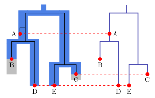

1 September 2014 by Remco Bouckaert
Sampled ancestor trees are trees where the nodes that are sampled need not necessarily be leaf nodes, but can be internal nodes of degree two — that is, they only have one parent (as per usual) and one child. This is useful in the case where there are fossils that represent direct ancestors ofa number of extant species. Another situation is where there is epidemiological data and a patient is sampled multiple times, or an individual was sampled and caused infections which were sampled later. Then earlier samples will be ancestors of later samples. To use sampled ancestors trees in BEAST, you need the sampled ancestor package (easiest to install in BEAUti using the File/Manage Packages menu).

In a transmission tree — trees representing an epidemic — some samples will most likely be direct ancestors of later samples. To ensure correct estimation of parameters, like birth rate or substitution rate, models with sampled ancestors should be used for data where direct ancestors are likely to be present. Not accounting for sampled ancestors leads to biases in parameter estimates. For example, the birth rate lambda will be overestimated if you run with binary trees since there are more birth events in a binary tree than in a sampled ancestor tree. Furthermore, if you want to know who exactly infected who, this is not quite as clear in a binary tree as in a sampled ancestor tree.
Likewise, when you model fossil as part of the speciation process (that is, fossils are samples from the process) then considering binary trees in stead of sampled ancestor trees will introduce biases in estimates of divergence times. The tree prior models the fossilisation process, and parameters in the prior will have a bias in their estimate if binary trees are used.
The SABDSamplingThroughTimeModel is the default sampled ancestor birth-death-sampling tree prior in the sampled ancestors package. It has the following parameters:
For the fossilisation process, r=0 because any sample will never be removed, so any of its descendants can be sampled. For r=1, there never is a sampled ancestor. In epidemics r=1 indicates the individuals is removed from the edidemic by sampling. For the transmission process in an epidemic, r is close to 1, depending on type of infection — e.g. it was found to be 0.8 for HIV.
rho is used for contemporary sampling only. It represents the proportion of samples taken out of complete population. For fossilisation, typically rho is close to 1, that is, almost all species relevant to the analysis (belonging to the clade) will be sampled. For epidemics, samples are not contemporary but serially sampled, so rho is not specified.
There is parameter unidentifiability (see this paper) when rho=0.
The birth death sampling model can be used in combination with the skyline model (implemented in the SABDSkylineModel class) where the time spanned by the tree is divided into a number of intervals. Each of these intervals can have its own lambda, mu, psi, r, rho, but they can be shared among intervals as well. For example, you can have a constant mu and psi throughout time, but a different lambda for each interval.
The number of intervals for the skyline model depends on number of times that rates can be expected to be shifted. For instance, if no samples were taken before 1980, but samples are available after 1980, there is a rate shift in sampling rate (psi), so t=1980 is a boundary, and you can specify only psi changed, but that lambda, mu, r (and rho=0) remain the same through the two intervals.
Typically, no sequence data is available for fossils. Without sequence data on fossils, there is no information to infer the tree. In this case, in order to be able to infer the tree, you need at least one parameter, e.g. a strong prior on rho, and lambda, mu and psi can be estimated (r=0). Without fixing rho, all fossils will probably become sampled ancestors, and time estimates will become biased and be estimated too low.
Assuming you set up an analysis in BEAUti say with a Yule model, first of all the tree needs to be replaced by a sampled ancestor tree, the tree operators need to be replaced by those for sampled ancestor trees, so the tree can jump between nodes being ancestors and those being leafs. Further, the Yule model needs to be replaced by the appropriate tree prior, either SABDSamplingThroughTimeModel or SABDSkylineModel.
See the examples in the example directory of the sampled ancestor package for more details.